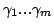

これまで述べてきたように、『UTF-2000 方式』の実装（以下では『UTF-2000 実装』と呼ぶ）では文字にに対して何らかの処理を行なう時に対象となる文字 の処理に必要な属性を参照する必要がある。このため、各文字の属性を機械可 読な形で格納したデータベースが必要となる。
このため、我々は define-char 形式で表現される文字属性データベースを開 発中である。これは、UTF-2000 技術の実証を目的とするとともに、将来にお ける UTF-2000 技術に基づく文字情報交換のベースとなる標準的なデータベー スを構築することも視野に置いている。
現在のデータベースは
この標準文字データベースでは、非漢字に関してはおおむね Unicode
[5] の定義にのっとっている一方、漢字に関しては微小な字体差
も区別している。漢字の各文字（字体）の内、大漢和辞典と同じ字体でないも
のについては、 morohashi-daikanwa という属性の値として、大漢和番
号と差異の度合および整理番号を持たせている。また、The Unicode
Standard [5] の例示字体と同じ字体でないものに対しては、対
応する Unicode の符号位置を =>ucs  という属性の値とする。
という属性の値とする。
UTF-2000 実装にとって、文字属性データベースは実装の挙動を定義するもの であるので、処理に必要な文字属性と UTF-2000 実装の挙動を対応付ける必要 がある。すなわち、少なくとも処理に用いる文字属性に対しては、名前や型や 意味を定義する必要があるといえる。また、人間がこのデータベースを字書と して用いる場合やデータベースのメンテナンスを行なう上でも文字属性の形式 や意味を規定することは重要である。
このような観点に基づき、XEmacs UTF-2000 を対象に幾つかの文字属性の命名 規約と幾つかの文字属性の形式・意味を規定し、それに基づく文字属性データ ベースを開発している。この章では文字属性に関する規約と文字属性データベー スについて概説する。
UTF-2000 モデルは XEmacs UTF-2000 は現在のところ、
4.2 節で述べる『符合位置属性』と
4.4 節で述べる 『->decomposition 属性』を除
き、文字属性の意味を規定していない。しかしながら、文字属性データベース
を構築・メンテナンスしたり、文字属性データベースを利用するアプリケーショ
ン・プログラムを実現する上では一定の規約があった方が望ましいといえる。
そこで、経験的に文字属性の命名規約を整備し、文字属性の名称のパターンと
大まかな形式および意味を対応付けようとしている。
ある文字 に対して関係 foo を持つ文字 が存在す
る時、文字 の属性 ->foo は値の各要素 が
のfoo であることを意味する。ここで、->foo
の値
はリストである。
同様に、 の属性 <-foo は文字 が値の各要素
の foo であることを意味する。->foo
と同様に、<-foo の値
 もリスト
である。
(->lowercase ?a) は、文字
a が文字 A の小文字であることを表している。
(<-lowercase ?A) は、文字
a が文字 A の小文字であることを表している。
UTF-2000 実装の中では文字はオブジェクトの一種として符号化せずに扱うこ とができるが、UTF-2000 実装の外の世界との間ではなんらかの翻訳手法が必 要となる。
このとき、もし符号化文字集合が利用可能でかつ表現したい文字を十分に表現 可能であるなら、その符号化文字集合の符合位置を使ってその文字を表現する ことができる（この目的のために XEmacs UTF-2000 は 4.2 節で述べた coded-charset 機能を用意して いる）。しかしながら、表現したい文字が利用可能な符号化文字集合に収録さ れていない場合や、対応する文字が収録されていてもそこで規定された抽象文 字と表現したい文字との差異が許容できない場合、符号化文字集合を用いるこ とはできない。
そのような問題を解決するためには UTF-2000 方式に基づき文字オブジェクト の性質を列挙するような形式があれば良い。こうしたものとして XEmacs UTF-2000 では文字指定 (character-specification; char-spec)形式 を規定している。
文字指定の形式は Lisp の連想リスト (association-list) で、リストの各要 素が各文字属性を表現する。連想リストの鍵 (key) 部（各要素の先頭 (car) 部）が属性名を表し、連想リストの値 (value) 部（各要素の残り (cdr) 部） が属性値を表す。
文字指定が表す意味はその性質を有する抽象文字（具象文字（書かれた文字） の集合）である。
なお、この形式は関数 define-char の引数で指定されるものと同じである。
文字データベースにおいて文字間の関係を記述するような場合、値に記載する 文字の他に文字間の関係にも属性を付けたい場合がある。例えば、文字の正規 化を行なう場合、アプリケーションによって正規化規則が異なるので、このた めの異体字データベースを作る場合、どの正規化規則を用いているかを記載す る必要がある。また、学術的なデータベースを作る場合において、文字学上の 学説が異なる場合に出典やどの学説を用いているかなどを記載する必要がある。 この他、知的財産権の管理を行なう場合にもデータの出典や権利情報を記録す る必要がある。
このような目的のために、XEmacs UTF-2000 では文字参照 (character-reference; char-ref) 形式を規定している。
文字参照の形式は Lisp の属性リスト (property-list) である。ここでは任 意の属性が利用可能であるが、幾つかの属性名に対してはその意味が予め規定 されている。
以下に意味が規定されている属性について説明する：
[型] 文字、もしくは、文字指定
[型] 出典・典拠を表すシンボル（出典シンボル）のリスト。
以下に XEmacs UTF-2000 の基本文字データベースで用いている出典シンボル を列挙する。我々は漢籍および現代中国文献に対する出典シンボルは国際的に 用いられている中国語のピンイン表記を採用することにしたが、歴史的事情か ら日本語ローマ字表記のものも存在している。表 4.1.3 では、今後用いていく出典シンボル名を「名前」に記載し、歴史的事情から現 在用いている日本語ローマ字表記の出典シンボルを「代替名称」に記載してい る。
| 名前 | 代替名称 | 内容 |
| chuuka-daijiten | 中華大字典 | |
| doubun-tsuukou | 同文通考 | |
| gyokuhen | 玉編 | |
| henkai | 篇海 | |
| inkai | 韻会 | |
| inkaiho | 韻会捕 | |
| jii | 字彙 | |
| jiiho | 字彙捕 | |
| jiyun | shuuin | 集韻 |
| kaihen | 海篇 | |
| kangxi | 康熙字典 | |
| kouin | 広韻 | |
| morohashi-daikanwa | 大漢和辞典 | |
| ruishuu-meigishou | 類聚名義抄 | |
| seiin | 正韻 | |
| seiji-tsuu | 正字通 | |
| setumon-tuukun-teisei | 説文通訓定声 | |
| shouwen | 説文解字 | |
| sougen-irai-zokujifu | 宋元以来俗字譜 | |
| yuquan | 玉泉 |
4.2 節で述べたように、XEmacs UTF-2000 では coded-charset の名前を属性名とする文字属性は coded-charset における符 合位置を表す特別な文字属性である。この属性に関する情報は、ファイル入出 力などにおける文字符合の変換処理において利用される。
符合位置属性の値の形式は整数である。整数値のとり得る範囲は対応する coded-charset によって制約される。
ところで、現在のところ、ある文字属性名が符合位置属性名であるかどうかは、 その属性名を名前とする coded-charset が存在するかによっている。すなわ ち、符合位置属性を表す属性名の命名規約は今のところ存在しておらず、属性 名だけではその文字属性が符合位置属性かどうかを機械的に決定することがで きない。現在の XEmacs UTF-2000 においては別に coded-charset が定義され るためにこれで問題はないのであるが、文字属性データベースとしては何らか の規約があった方が良いかも知れない。
The attribute named =>ucs is used to indicate a UCS code point of
a character. If a user would not like to unify characters that are
unified in UCS, or would like to define a character that is not
included in UCS, this attribute is available to specify the nearest
UCS code point.
If a user need to refer a code point of UCS, the user can use
(or (get-char-attribute CHAR 'ucs)
(get-char-attribute CHAR '=>ucs))
instead of (get-char-attribute CHAR 'ucs).
The information of =>ucs attributes are stored in the internal
variants database,
and users can find variant characters corresponding
to a UCS code point by the following function:
関数 char-variants (character)This function returns variants of character.
Perhaps there are another kind of variant relations, so we are planning to extend this feature more generally.
The attribute named ->decomposition is used to specify combining
sequences of composite (precomposed) characters. The value of
->decomposition attribute is a list of characters or
character-specifications 4.1.2, which means
that a character defined with a ->decomposition attribute can be
interpreted as the sequence of characters specified by the value of
the attribute.
For example, if á has an attribute
(->decomposition ?a ?´),
the sequence (?a ?´) can be composed into á.
This information can be used in the coding-system features, which is
code-conversion features of the Mule API  .
.
In addition, there is a builtin function to find a precomposed character from a list of combining sequence.
関数 get-composite-char (list)This function returns a character composed from elements of the list.
Each element is a character, an integer or a character-specification. If an element is an integer, it is interpreted as a code point of UCS character.
多くの漢字は偏と旁などの部品の組み合わせによって構成されている。しかし ながら、従来の多くの符号化方法では組み合わされた漢字を単位にして扱われ ており、漢字の部品組み合わせ構造に関する情報は符号化の対象とならないこ とが多かった。このため、自由に利用可能なデータの蓄積も不十分である。
本プロジェクトでは漢字の部品組み合わせ情報を利用するために 4.5.5 節で述べる ideographic-structure 属性を定義し、XEmacs UTF-2000 において この属性を扱えるようにした。
また、漢字の部品組み合わせ情報に関するこれまでの試みを調査し、自由に利 用可能なものに対しては ideographic-structure 形式に変換するためのプロ グラムを作成した。
Kanji characters are very visibly composed not of atomic units, but of a relatively small number of components. The tradition of defining a character by its components is as old as the script itself. Encoding of Kanji in computers, however, has so far failed to take advantage of this structural feature and treated every Kanji as an atomic unit. To make Kanji encoding more efficient, it has been suggested to encode these parts and compose the characters on the fly. This will make the rendering process more complex and potentially less appealing. The feasability of this will depend on the applictions available for rendering and certainly will require more research. Even if not used as the primary encoding in text, however, such a character component database will still serve an important purpose for classifying, analysing and retrieving characters.
Since the 1970's, research concerning such an analytic encoding has been conducted in Taiwan, China, Japan and elsewhere. One of the most important and thoroughly researched proposal has been that of Hsieh Ching-chun (謝清俊) of Academia Sinica, Taiwan. Building on previous results, he started in 1990 to build a database of the structure of Kanji characters. Since this work was carried out at his `Chinese Document Processing' lab, it came to be known as the CDP database. Christian Wittern has been involved with this project since 1994. Currently, the database contains glyph expressions of more than 55500 characters, including all characters contained in the 漢語大辞典. The database has been developed on the Traditional Chinese version of Windows using Access as the database engine. The user interface only runs on versions of Chinese Windows from Windows 95 up to Windows ME. Professor Hsieh graciously gave permission to port the content of the CDP database to the UTF-2000 project and release it under the GPL.
The expressions in the CDP database are based on Big5, the local encoding for Kanji characters mostly used in Taiwan. For the purpose of expressing the parts of characters, that are not characters themselves, more than 2000 codepoints from the private use area (PUA) of Big5 had been used. Furthermore, the CDP database uses a set of only three operators for connecting the characters, although in practice, this has been expanded to 11 due to the introduction of shortcut operators for handling multiple occurrences of the same component in one character. Figure 4.5.2 shows a list of these operators. There are three more operator-like characters, which are used when embedding glyph expressions into running text.
Another database of Chinese characters and glyph expressions, if somewhat smaller than the CDP with around 13000 characters at the moment, is the database developed by the Chinese Buddhist Electronic Text Association (CBETA). This is a sideproduct of CBETA's groundbreaking work of creating an electronic version of Chinese Buddhist scriptures. So far, more than 80 million characters of text have been input, carefully proofread and marked up in XML according to the Guidelines of the Text Electronic Initiative. The base character set used for this is again Big5. Characters that could not be found in Big5 have been collected and expressed with glyph expressions. The CBETA database again uses a simple system of three basic connecting operators, expressed with ASCII interpunction as follows:
The CBETA character database avoids the reliance on characters from the PUA. Instead, character components are expressed by using arithmetic operators - and + for deletion and replacement of characters. In this manner, a glyph exression for the character 寵 could thus be constructed as: [宋-木+龍], here the part 木 is replaced with 龍. Using this simple arithmetic, a surprisingly large number of characters can be expressed without much effort. Some expressions do however get more complicated, for example [((((嘹-口)-小)-日+(工/十))*支)/皿].
Since Christian Wittern has been involved with the CBETA project for some time, it has been possible to gain permission to include the CBETA character database into the UTF-2000 character database. This is especially interesting, since the CBETA data are derived directly from text input and sources for the characters are easily determined, quite contrary to dictionaries and standard documents, where it is not easy to find real world examples for some of the characters.
漢字の部品組み合わせ構造に関する情報を XEmacs UTF-2000 で利用するため にideographic-structure 属性を定義した。
ideographic-structure 属性の型は、文字、文字指定または文字参照のリスト である。
ideographic-structure 属性の値の要素として指定された文字（および文字指 定、または、文字参照の :char 属性で指定された文字・文字参照）は ideographic-structure 属性を取ることができる。これにより、 ideographic-structure 属性は入れ子構造を取ることができる。
The Unicode Standard introduced in version 3.0 a set of socalled `IDEOGRAPHIC DESCRIPTION CHARACTER' (IDC) to allow the construction of Kanji glyph sequences. This set of operators followed a proposal from China, based on research done there and describes 12 operators. For the purpose of using glyph expressions in the UTF-2000 character database, we decided to use the operator set from Unicode/ISO 10646. This set is shown in Figure 4.5.4.
The adaption of the CDP and CBETA database and subsequent inclusion in the UTF-2000 character database thus involved the following steps:
Apart from this, some related supporting tasks were also necessary. Since it is difficult to input unknown and rare Kanji characters, a new input method had to be devised. For this purpose, a table of input keys of the Four Corner system originally created by Christian Wittern for the Kanji characters in CNS-11642:1992 as part of the `KanjiBase' has been ported and adopted so that it could be used within UTF-2000. Additionally, input keys for Kanji radicals in different shapes and other characters from Unicode that where not yet covered (essentially, characters with less than 7 strokes) have been added. This newly expanded input table contains now more than 50000 input keys and will be part of the UTF-2000 character database.
Quite a different problem, that requires further attention is the way the glyph expressions are composed. The CDP database uses a `intuitive' approach and splits characters where the most logical cut-off line is. This is, however not always the ethymological correct way of splitting. In the UTF-2000 character database, we prefer to have ethymological splitting and new expressions are added in this way. The task of systematically identifying and changing the intuitive splittings has not yet been done.
The whole process, which is not yet fully completed, involved a tedious and time consuming task of meticulously checking the accuracy of every single entry for more than 70000 characters. At the time of this writing, the porting and checking is done in a first go for more than 40000 characters. This is an important and fundamental addition to the UTF-2000 character database.
As has been mentioned above, a table of input keys for the Four Corner method has been ported to UTF-2000 to be used as input keys. Since the Four Corner numbers are systematically assigned to the four corners of a character, it is possible to generate new Four Corner values based on existing characters, if the composition of characters is known. Since this information is exactly the content of the glyph expressions, new Four Corner input keys can automatically be generated, thus covering the whole 70000 Unicode characters. This provides also an additional method for proofreading both the glyph expression data and the Four Corner input codes.